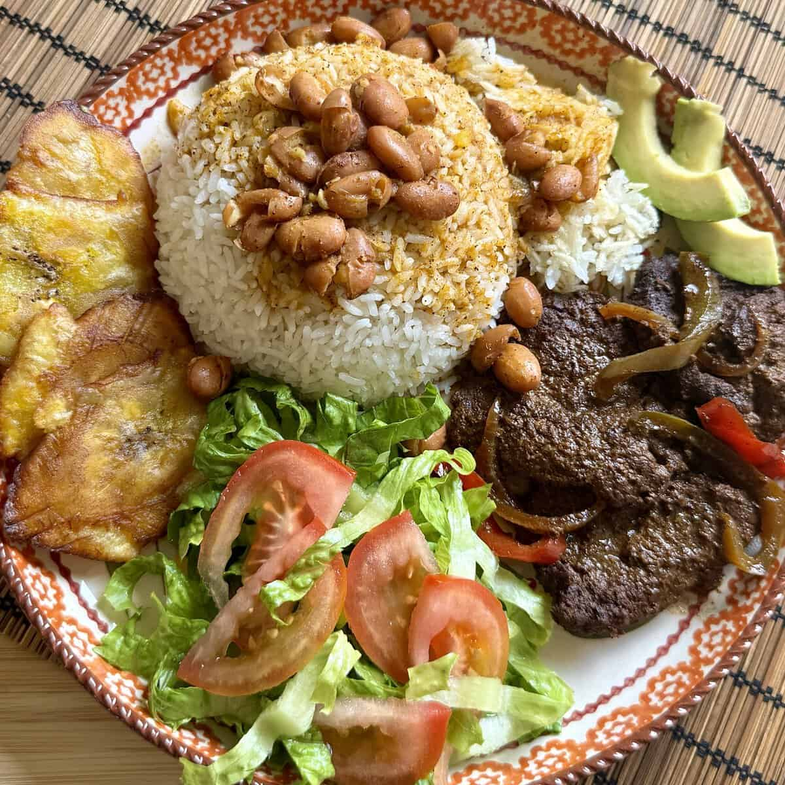

La Flag

El almuerzo en la República Dominicana es la comida más importante del día. La Bandera es el buque insignia de la comida tradicional dominicana, también conocida como la comida, o incluso como el plato del día, y consiste en arroz, habichuelas y carne
Este sencillo vínculo entre la bandera nacional y la comida básica del mediodía refleja cómo la comida en la República Dominicana es una parte central de la identidad nacional, una fuente de orgullo y patriotismo, y para la diáspora, también de nostalgia.
Ingredientes
- Arroz Blanco
- 5 cucharadas aceite vegetal, (soya, maní o maíz)
- 4 tazas arroz (grano largo, Carolina), (grano largo, Carolina)
- 4 cucharaditas sal
- Habichuelas Guisadas
- 2 tazas habichuelas rojas, pintas o giras secas
- 1 cucharada aceite de oliva
- ¼ cucharadita orégano
- 1 ají cubanela, o pimiento morrón picado
- 1 cebolla roja, pequeña cortada en cuartos
- 2 dientes ajo, majados
- 1 taza auyama, cortada en cubos
- ½ taza salsa de tomate
- 4 ramitas tomillo, (opcional)
- Hojas de un tallo de apio, picadas (opcional)
- ½ cucharadita cilantro, fresco picadito
- 1 cucharadita sal, (o más, al gusto)
- Pollo Guisado
- 2 libras pollo
- 2 limones, (limas fuera de la RD) cortados en mitades
- ¼ cucharadita orégano
- 1 cebolla roja, pequeña cortada en rodajas u octavos
- ½ taza apio, picado (opcional)
- 1 cucharadita sal, (podrías necesitar más)
- ½ cucharadita ajo, triturado
- 2 cucharadas aceite vegetal, (maíz, maní o soya)
- 1 cucharadita azúcar, blanca regular
- 2 tazas agua
4 tomates , cortados en 4 cuartos
- 4 tomates , cortados en 4 cuartos
- 4 tomates , cortados en 4 cuartos
- 4 tomates , cortados en 4 cuartos
- Unas hojitas de cilantro
- ¼ cucharaditas pimienta
Preparacion
- En una olla grande, calienta el aceite a fuego medio. Agrega la cebolla y sofríe por 2 minutos.
- Agrega el ajo, orégano, ajíes, tomillo y sofríe por 1 minuto más.
- Agrega la leche de coco y el agua. Lleva a ebullición.
- Agrega los guandules y la auyama. Cocina a fuego lento por 20-30 minutos o hasta que los guandules estén tiernos.
- Agrega el perejil y ajusta la sal al gusto. Cocina por 5 minutos más.
Home